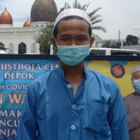

Direktori Data Masjid Kota Depok
Profil Mesjid Jami' Nurul Musthofa
Gallery Foto

Deskripsi
Masjid Jami' Nurul Musthofa mulai dibangun pada tahun 2016. Tahun 2016 mulai dilakukan pengerukan tanah yang semula merupakan rawa-rawa. Tahun 2017, pembangunan masjid secara fisik dimulai dan masih berlangsung hingga kini. Yang menarik dari Masjid Nurul Musthofa adalah konsepnya yang menyerupai arsitektur masjid besar di Madinah, yakni Masjid Nabawi. Masjid dengan dinding bercat putih ini memiliki sepuluh kubah dengan warna bronze yang menawan. Bangunan masjid ini terdiri dari dua bangunan: satu bangunan utama masjid sebagai tempat sholat dan satu bangunan lainnya sebagai tempat wudhu.
Alamat & Peta Lokasi
Jalan Kampung Sawah No.7, RT.2/RW.1, Kelurahan Jatimulya, Kecamatan Cilodong, Kota Depok, Jawa Barat 16413
Testimony & Komentar
Pendiri Masjid
Habib Hasan bin Ja'far Assegaf
Masjid Nurul Musthofa ini didirikan sebagai tempat ibadah sekaligus pusat pendidikan milik organisasi Majelis Nurul Musthofa, serta masjid ini menjadi pusat dakwah Islam untuk masyarakat Jabodetabek.Pengelola Masjid
Yusuf
Pengelolaan masjid selalu dijalani dengan lancar dan teratur. Kami selalu membuat agenda terkait pengecekan fasilitas, penyaluran dana masjid, dan kegiatan-kegiatan yang rutin dijalani setiap bulan.Warga
